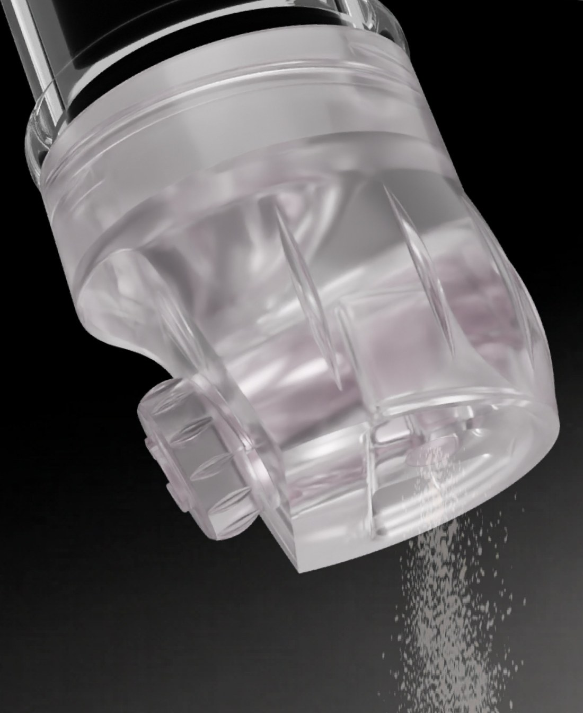
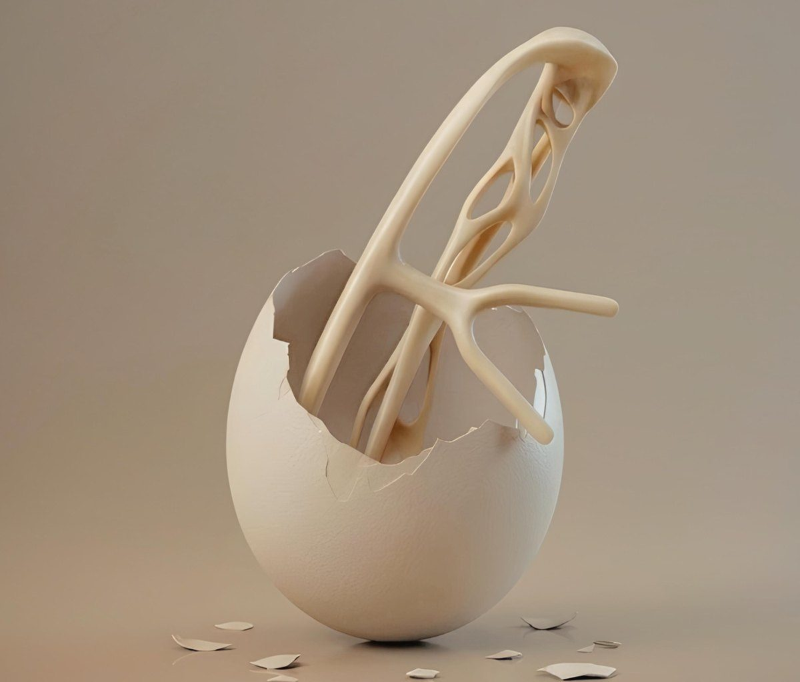

- Proyecto
- Mecanismo dosificador
- Contexto
- Trabajo en equipo · 3.er curso
- Rol
- Tolerancias, FDM y prototipo
- Material
- rPET monomaterial · prototipo en PET-G
- Hoja
- 02 / 06
Dosificar especias sin agitar el bote
Las tapas perforadas obligan a sacudir el envase, sobredosifican y dejan entrar el vapor de la cocción. La propuesta es un tapón con tornillo sin fin que entrega una dosis fija por cada giro de 120° y cierra el paso al soltarlo.
Se integra en la línea de envasado existente, con la misma rosca y el mismo bote, y se diseña en rPET monomaterial. Una tolva asimétrica con difusores en diente evita que el polvo forme bóveda.
Del boceto al tornillo sin fin
Se exploraron compuertas y válvulas por gravedad, pero atascaban y ocupaban demasiado. Los primeros esquemas ya contraponen el molinillo tradicional, de giro libre, con un dosificador limitado por rosca.
El tornillo sin fin resolvía el volumen exacto y la barrera contra derrames en un espacio mínimo, y se integraba en el tapón sin alterar el bote de la marca.
Planos acotados
La tapa y el tornillo se montan a presión: un pivote en el extremo del eje encaja en un taladro ciego moldeado en la tapa, sin piezas de fijación adicionales.
El trinquete vuelve a la posición de bloqueo por la elasticidad del propio material. Tolerancia general ±0,10 mm, más estricta en el ajuste eje-agujero.
Iterar hasta que fluya y retenga
Prototipos impresos para eliminar la compactación del producto: embudo asimétrico y orificio de salida calibrado. La versión final, en PET-G, funciona con producto real y se integra en la gama actual de botes.
| Especia | g/ml | g/click |
|---|---|---|
| Cúrcuma | 0,55 | 0,63 |
| N. moscada | 0,50 | 0,57 |
| Cayena | 0,45 | 0,51 |
Densidades aproximadas.
